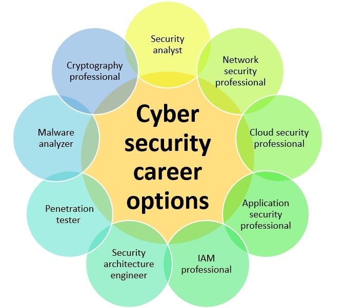

The CyberBill Cybersecurity Academy is a structured six-month, hands-on training program designed to transform complete beginners into confident, job-ready cybersecurity professionals. Rather than learning isolated concepts, you'll progressively build, secure, monitor, and defend a realistic enterprise environment while mastering the knowledge required for the CompTIA Security+ (SY0-701) and ISC² Certified in Cybersecurity (CC) certifications.
Through instructor-led classes, an interactive Learning Management System (LMS), practical laboratories, real-world assignments, enterprise projects, continuous WhatsApp mentoring, and a comprehensive capstone simulation, you'll gain both the theoretical understanding and practical experience expected of today's cybersecurity professionals. The program also provides a solid foundation for learners who intend to pursue certifications such as Certified Ethical Hacker (CEH) and other advanced cybersecurity specializations.
Throughout the academy, you will assume the role of a cybersecurity professional responsible for protecting a fictional multinational organization, applying industry-standard frameworks, security tools, and best practices to solve real-world security challenges. By graduation, you'll have developed a professional portfolio that demonstrates your technical skills, problem-solving ability, and readiness for entry-level cybersecurity roles.
Duration: 6 Months | Delivery: Live Classes, LMS, Hands-on Labs & Continuous Mentorship | Focus: ISC² CC, CompTIA Security+ (SY0-701) & Job Readiness

Duration: 4 Weeks • Est. Learning Time: 35–45 Hours
Certification Alignment: ISC² CC – Security Principles, Business Continuity, Access Controls (intro); CompTIA Security+ SY0‑701 Domains 1 & 5 (foundations)
Month Overview
Welcome to your cybersecurity journey. During this month, students build the foundation upon which every future topic will depend. Rather than memorizing definitions, learners begin thinking like security professionals by understanding how organizations identify assets, manage risks, establish governance, and secure their environments. Students will also build the CyberBill Academy virtual laboratory that will be used throughout the six‑month program. The continuous capstone project begins here with the creation of the fictional company Nexus Global Fintech (NGF), which students will secure and defend throughout the academy.
Learning Outcomes
By the end of Month One, students should be able to:
Software & Tools
Students install and configure: Oracle VirtualBox (or VMware Workstation Player), Ubuntu Desktop, Windows 11 Evaluation VM, Kali Linux, Visual Studio Code, Git, GitHub Desktop, 7‑Zip, Notepad++, Draw.io (or diagrams.net), Microsoft Office or LibreOffice.
Professional Skills Developed
Technical documentation, analytical thinking, risk identification, communication, report writing, security awareness, team collaboration, research skills.
Continuous Capstone Project – Nexus Global Fintech (NGF)
Throughout the academy students work as Junior Security Analysts responsible for protecting Nexus Global Fintech, a fictional multinational financial technology company. Month One establishes the company's: business profile, critical assets, security objectives, initial policies, risk register, and virtual lab environment. Every subsequent month expands this same enterprise.
Week 1: Introduction to Cybersecurity & Professional Lab Setup
Week 2: Core Security Principles & Security Awareness
Week 3: Governance, Risk Management & Compliance
Week 4: Linux Fundamentals & Virtualization Security
Month 1 Practical Challenge
Students will independently: build a functioning cybersecurity lab; configure virtual networking; document their environment; demonstrate Linux command‑line proficiency; produce a basic risk assessment for NGF; and present their findings in a professional report.
Month 1 Project – Establishing the Security Foundation for Nexus Global Fintech
Students will submit a portfolio containing: NGF Company Profile, Asset Inventory, Risk Register, Acceptable Use Policy, Security Awareness Plan, Linux Server Build Documentation, Virtual Lab Network Diagram, Screenshots of the completed lab, and a Reflection on lessons learned.
Month 1 Assessment
Weekly Quizzes (20%) · Hands‑on Labs (25%) · Assignments (20%) · Monthly Project (25%) · Participation (WhatsApp & Live Sessions) (10%)
Certification Coverage
This month addresses foundational objectives from both ISC² CC and CompTIA Security+ SY0‑701, particularly around security principles, governance, risk management, security awareness, and introductory system administration.
Monthly Bonus: Guided study in TryHackMe portal
Duration: 4 Weeks • Est. Learning Time: 40–50 Hours
Certification Alignment: ISC² CC (Domains 2, 3, 4, 5) • CompTIA Security+ SY0‑701 (Domains 1, 2, 3, 4)
Month Overview
Welcome to Month 2. Now that Nexus Global Fintech (NGF) has established its governance framework, security policies, and foundational infrastructure, the next responsibility is designing and securing the company's enterprise network. This month introduces students to the technologies that enable devices, servers, users, and cloud services to communicate securely. Students will learn how networks function, how attackers exploit them, and how security professionals defend them. The practical focus is on designing, configuring, analyzing, troubleshooting, and securing enterprise networks using industry‑standard tools. By the end of the month, students will have built and documented a secure virtual enterprise network capable of supporting NGF's expanding infrastructure.
Mission Brief – Mission Code: NGF-002
Congratulations! The executive management of Nexus Global Fintech (NGF) has approved your security governance framework. Your cybersecurity team has now been assigned a new responsibility: Design and secure the company's internal network before new departments and employees are onboarded. Your objectives this month are to:
Learning Outcomes
By the end of Month Two students should be able to:
Software & Tools
Students will install or continue using:
Professional Skills Developed
Students begin developing:
Continuous Capstone Project – Nexus Global Fintech (NGF)
During Month Two students become the Network Security Team responsible for building the NGF enterprise network. Deliverables include:
This infrastructure becomes the foundation for all future academy activities.
Week 5: Networking Fundamentals & Enterprise Architecture
Week 6: IP Addressing, Subnetting & Enterprise Network Design
Week 7: Network Protocols, Services & Traffic Analysis
Week 8: Network Security Controls & Defensive Technologies
Month 2 Practical Challenge
Students will independently:
Month 2 Project – Building the Secure Enterprise Network for Nexus Global Fintech
Students will submit a professional portfolio containing:
Month 2 Assessment
Assessment components and their weights:
Certification Coverage
This month provides comprehensive coverage of enterprise networking concepts required for both ISC² Certified in Cybersecurity (CC) and CompTIA Security+ SY0‑701. Students gain practical experience with network architecture, addressing, protocols, traffic analysis, and defensive technologies while developing the enterprise infrastructure that will support the remaining months of the academy.
Monthly Bonus: Guided study in TryHackMe portal
Duration: 4 Weeks • Est. Learning Time: 40–50 Hours
Certification Alignment: ISC² CC (Domains 3, 4, 5) • CompTIA Security+ SY0‑701 (Domains 1, 2, 3, 4)
Month Overview
Welcome to Month 3. With the Nexus Global Fintech (NGF) enterprise network now designed and secured, the next priority is protecting the systems that operate within it. Every workstation, server, and virtual machine represents a potential attack surface. As cybersecurity professionals, your responsibility is to ensure these systems are securely configured, properly maintained, and resilient against compromise. Throughout this month, students will gain hands‑on experience administering both Windows and Linux systems, applying security baselines, managing users and permissions, securing services, and implementing endpoint protection. By the end of the month, students will have created hardened "gold image" systems ready for enterprise deployment.
Mission Brief – Mission Code: NGF-003
Congratulations! The NGF enterprise network is now operational. Management has approved the onboarding of employees, servers, and business applications. Before production begins, every endpoint and server must be securely configured. As members of the Infrastructure Security Team, your mission is to:
Learning Outcomes
By the end of Month Three, students should be able to:
Software & Tools
Students will use:
Professional Skills Developed
Students begin developing:
Continuous Capstone Project – Nexus Global Fintech (NGF)
The Infrastructure Security Team is responsible for deploying secure systems across the enterprise. Deliverables include:
These systems will become the production environment used throughout the remaining academy.
Week 9: Windows Administration & Enterprise Workstations
Week 10: Linux Administration & Server Management
Week 11: Operating System Hardening & Endpoint Security
Week 12: Virtualization Security & Enterprise Endpoint Management
Month 3 Practical Challenge
Students will independently:
Month 3 Project – Enterprise Endpoint Security Deployment for Nexus Global Fintech
Students will submit a professional portfolio containing:
Month 3 Assessment
Assessment components and their weights:
Certification Coverage
This month strengthens students' understanding of operating system security, endpoint administration, secure configuration, and system hardening. It directly supports the operating system, endpoint security, access control, and security operations objectives required for ISC² Certified in Cybersecurity (CC) and CompTIA Security+ SY0‑701. More importantly, it equips students with practical administration skills that are expected in entry‑level cybersecurity and IT security roles.
Monthly Bonus: Guided study in TryHackMe portal
Duration: 4 Weeks • Est. Learning Time: 40–50 Hours
Certification Alignment: ISC² CC (Domains 3, 4, 5) • CompTIA Security+ SY0‑701 (Domains 1, 3, 4)
Month Overview
Welcome to Month 4. The infrastructure of Nexus Global Fintech (NGF) is now established. The organization has:
However, one critical question remains: Who should have access to what, and how do we ensure only authorized users gain access? Identity is now the primary security boundary in modern organizations. This month focuses on Identity and Access Management (IAM)—the discipline responsible for identifying users, authenticating identities, authorizing access, and continuously managing permissions throughout the user lifecycle. Students will build an enterprise identity environment using Active Directory, implement access control models, understand authentication protocols, and design secure identity practices used in real organizations.
Mission Brief – Mission Code: NGF-004
Congratulations! The NGF infrastructure team has successfully deployed secure workstations and servers. The executive team is now preparing to onboard:
Before users can access company resources, the security team must design and deploy a secure identity architecture. Your mission:
Learning Outcomes
By the end of Month Four, students should be able to:
Software & Tools
Students will use:
Professional Skills Developed
Students develop:
Continuous Capstone Project – Nexus Global Fintech (NGF)
Students now become part of the Identity Security Team. Their responsibility is to design and deploy NGF's identity infrastructure. Deliverables include:
This identity environment will support NGF's Security Operations Center in Month 5.
Week 13: Identity & Access Management Fundamentals
Week 14: Active Directory Architecture & Administration
Week 15: Authentication, Authorization & Enterprise Access Control
Week 16: Access Control Models, Group Policy & Identity Security
Month 4 Practical Challenge
Students will independently:
Month 4 Project – Designing Secure Enterprise Identity Management for Nexus Global Fintech
Students will submit a professional portfolio containing:
Month 4 Assessment
Assessment components and their weights:
Certification Coverage
This month provides strong coverage of identity, authentication, authorization, access control, and enterprise security concepts required by ISC² Certified in Cybersecurity (CC) and CompTIA Security+ SY0‑701. Students not only learn IAM theory but gain practical experience with the technologies that form the foundation of enterprise security environments, including Active Directory, authentication protocols, privilege management, and identity governance.
Monthly Bonus: Guided study in TryHackMe portal
Duration: 4 Weeks • Est. Learning Time: 45–55 Hours
Certification Alignment: ISC² CC (Domains 4, 5, 2) • CompTIA Security+ SY0‑701 (Domains 2, 4, 5)
Month Overview
Welcome to Month 5. The Nexus Global Fintech (NGF) environment is now fully established. Students have:
However, a secure environment is never considered "finished." Cybersecurity professionals must continuously monitor systems, identify suspicious activity, investigate incidents, manage vulnerabilities, and respond to attacks. This month introduces students to the world of the Security Operations Center (SOC). Students transition from infrastructure builders into defenders responsible for protecting NGF's digital environment. They will learn how security teams collect evidence, analyze alerts, investigate threats, perform vulnerability assessments, and execute incident response procedures using industry‑standard tools and methodologies.
Mission Brief – Mission Code: NGF-005
Congratulations! The NGF enterprise infrastructure is now operational. Employees are accessing company resources. Servers are running business applications. Customer systems are processing financial transactions. The security leadership team has established a new requirement: "We need continuous visibility into our environment. We must detect attacks before they become breaches." Your role has changed. You are now part of the NGF Security Operations Center (SOC). Your mission:
Learning Outcomes
By the end of Month Five, students should be able to:
Software & Tools
Students will use:
Professional Skills Developed
Students develop:
Continuous Capstone Project – Nexus Global Fintech (NGF)
Students now become the NGF SOC Team. Their responsibility is to establish the organization's security monitoring and response capability. Deliverables include:
By the end of this month, NGF will have a functioning Security Operations capability.
Week 17: Security Operations Center (SOC) Fundamentals & Security Monitoring
Week 18: SIEM, Logging & Security Event Analysis
Week 19: Vulnerability Management & Security Assessment
Week 20: Incident Response, Threat Detection & Digital Investigation
Month 5 Practical Challenge
Students will participate in a simulated SOC operation. They must:
Month 5 Project – Establishing the Nexus Global Fintech Security Operations Center
Students will submit a professional SOC portfolio containing:
Month 5 Assessment
Assessment components and their weights:
Certification Coverage
Month Five provides deep coverage of the operational security concepts required by ISC² Certified in Cybersecurity (CC) and CompTIA Security+ SY0‑701. Students gain practical exposure to security monitoring, logging, SIEM, vulnerability management, incident response, threat intelligence, and security operations workflows. These skills directly align with entry‑level cybersecurity roles such as SOC Analyst, Security Analyst, Incident Response Analyst, and Vulnerability Management Analyst.
Monthly Bonus: Guided study in TryHackMe portal
Duration: 4 Weeks • Est. Learning Time: 50–60 Hours
Certification Alignment: ISC² CC (Domains 1, 2, 3, 4, 5) • CompTIA Security+ SY0‑701 (Domains 1, 2, 3, 4, 5)
Month Overview
Welcome to Month 6. You have reached the final stage of the CyberBill Cybersecurity Academy. The Nexus Global Fintech (NGF) environment has evolved from a simple organization into a complete enterprise infrastructure:
However, modern organizations continue to face rapidly evolving threats. Attackers now target:
This final month challenges students to think like security architects, penetration testers, incident commanders, and cybersecurity consultants. Students will modernize NGF using:
The academy concludes with a complete Red Team vs Blue Team Capstone Simulation and certification preparation.
Mission Brief – Mission Code: NGF-006
Congratulations. You have successfully built and defended the NGF enterprise environment. However, the cybersecurity landscape has changed. NGF is expanding its services into:
The executive board has issued a final directive: "Transform NGF into a modern Zero Trust enterprise capable of surviving advanced cyber attacks." Your final mission:
Learning Outcomes
By the end of Month Six, students should be able to:
Software & Tools
Students will use:
Professional Skills Developed
Students develop:
Continuous Capstone Project – Nexus Global Fintech (NGF)
Final Mission: Students act as the cybersecurity consulting team responsible for evaluating and defending NGF. The final capstone combines everything learned during the six‑month journey. Students must:
Week 21: Cloud Security Architecture & Enterprise Cloud Protection
Week 22: Zero Trust Architecture & Advanced Enterprise Defense
Week 23: Application Security & Web Defense
Week 24: Final Cyber Defense Simulation & Certification Preparation
Final Practical Challenge – CyberBill Enterprise Defense Challenge
Students demonstrate:
Final Capstone Project – Securing Nexus Global Fintech Against Advanced Cyber Threats
Students submit a complete cybersecurity portfolio containing:
Month 6 Assessment
Assessment components and their weights:
Certification Coverage
Month Six completes the cybersecurity knowledge journey required for ISC² Certified in Cybersecurity (CC) and CompTIA Security+ SY0‑701. Students finish the program with knowledge across:
Monthly Bonus: Guided study in TryHackMe portal